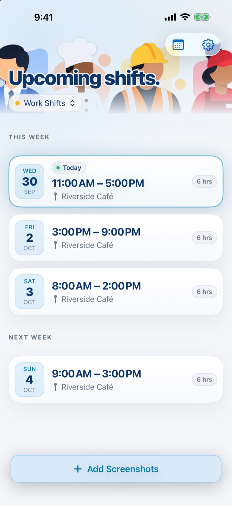
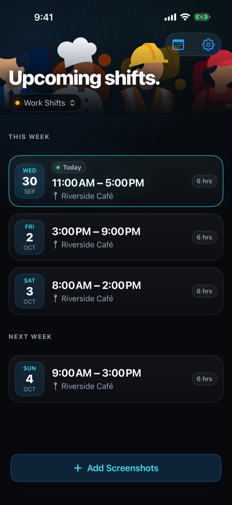

Screenshot?
Schedule it.
SchedShot turns screenshots of your work schedule into calendar events so you can spend less time entering shifts and more time doing literally anything else.
From screenshot to calendar.
Pick a schedule image, review the detected shifts, and add them to your calendar in a few taps.


Built for people with shifts.
Whether you're working retail, food service, construction, healthcare, or anywhere else with changing schedules, SchedShot removes the repetitive part.
Grab a screenshot
Use the schedule image you already have instead of manually entering every shift.
Recognized on device
SchedShot uses Apple's Vision technology to identify schedule information directly on your device.
Review and add
Confirm the shifts SchedShot found, then add them to your calendar.
Private by design.
Your schedule screenshots are processed locally using Apple's Vision framework. SchedShot does not upload your screenshots or schedule information to our servers.